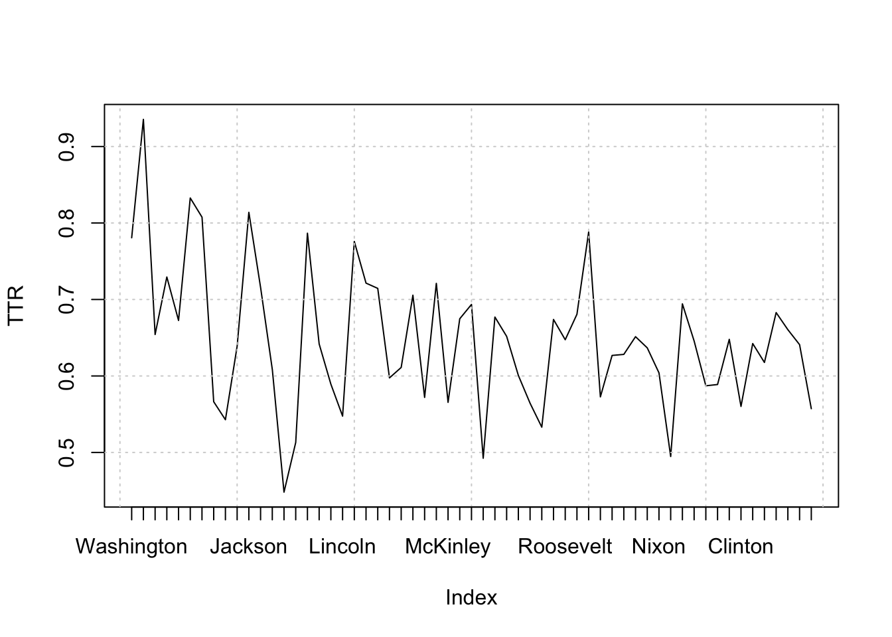
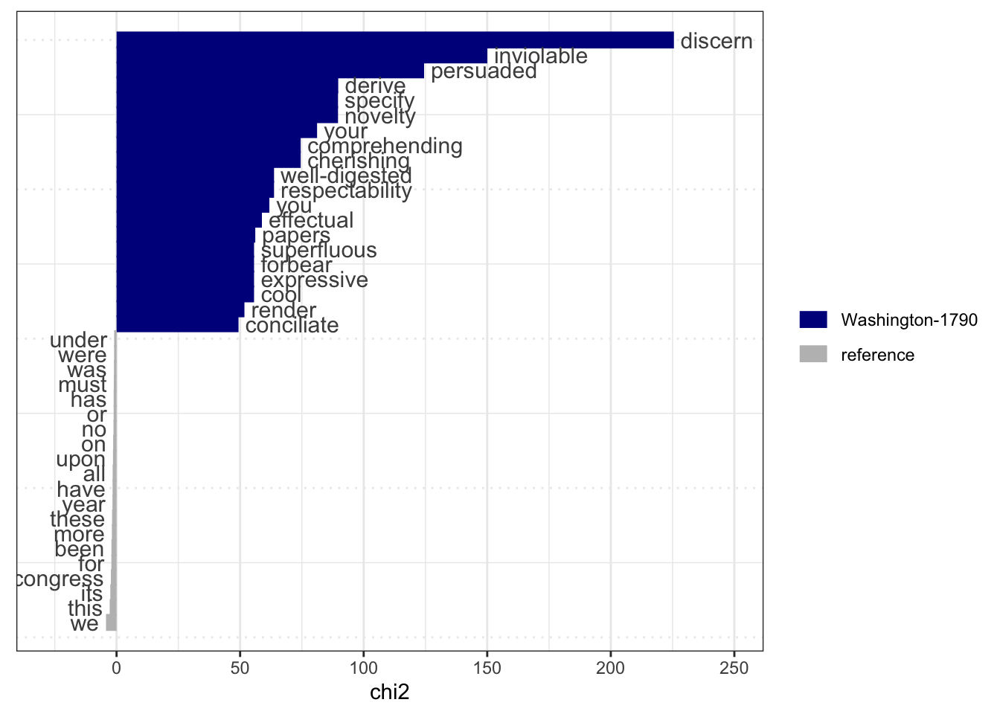

# install.packages("quanteda")
# install.packages("quanteda.textmodels")
# devtools::install_github("quanteda/quanteda.corpora")
# devtools::install_github("kbenoit/quanteda.dictionaries")
# install.packages("readtext")
library(quanteda)
library(quanteda.textmodels)
library(quanteda.textstats)
library(quanteda.textplots)
library(quanteda.corpora)
# used for reading in text data
library(readtext)1 Quanteda
The content in the section has most of the content from Quanteda’s tutorials, with each section adapted to be similar but different. Some topics are not covered in this section such as Wordfish, Regular regression classifier, Topic Models, etc. as to not reproduce a full tutorial series but to show main parts of the library.
This section is for the Quanteda tutorials, which has 3 components (object types).
The 3 object types:
corpus= character strings and variables in data frames, combines texts with document level variablestokens= tokens in a list of vectors, keeping the position of wordsdocument-feature-matrix(DFM) = represents frequencies in a document in a matrix, no positions of words, can use bag-of-words analysis
1.1 Libraries
Here is the list of Quanteda libraries to install and load in order to follow along with any part of the tutorial.
The readtext package supports: plain text files (.txt), JSON, csv, .tab, .tsv, .xml, pdf, .doc, .docx, etc and can be used to read a book for the Project Gutenberg for text analysis.
After you have properly installed and loaded the libraries, you can access the the data corpus available without the need of reading in a csv file. Load in a corpus from Quanteda package and save it as a variable.
Corpus available:
- data_corpus_amicus
- data_corpus_dailnoconf1991
- data_corpus_EPcoaldebate
- data_corpus_immigrationnews
- data_corpus_inaugural most common used one in tutorial
- data_corpus_irishbudget2010
- data_corpus_irishbudgets
- data_corpus_moviereviews
- data_corpus_sotu State of the Union speeches
- data_corpus_udhr
- data_corpus_ukmanifestos
- data_corpus_ungd2017
# to load a corpus and save it as variable name
corpus = corpus(data_char_ukimmig2010)1.2 Corpus
Load the corpus data_corpus_ukmanifestos, which is about British election manifestos on immigration and asylum.
brit_manifesto = corpus(data_corpus_ukmanifestos,
docvars = data.frame(party = names(data_corpus_ukmanifestos)))
brit_manifestoCorpus consisting of 101 documents and 1 docvar.
UK_natl_1945_en_Con :
"CONSERVATIVE PARTY: 1945 Mr. Churchill's Declaration of Pol..."
UK_natl_1945_en_Lab :
"Labour Party: 1945 Let Us Face the Future: A Declaration of..."
UK_natl_1945_en_Lib :
"LIBERAL MANIFESTO 1945 20 Point Manifesto of the Liberal Pa..."
UK_natl_1950_en_Con :
"CONSERVATIVE PARTY: 1950 This is the Road: The Conservative..."
UK_natl_1950_en_Lab :
"LABOUR PARTY: 1950 Let Us Win Through Together: A Declarati..."
UK_natl_1950_en_Lib :
"LIBERAL PARTY 1950 No Easy Way: Britain's Problems and the ..."
[ reached max_ndoc ... 95 more documents ]head( summary(brit_manifesto) ) Text Types Tokens Sentences party
1 UK_natl_1945_en_Con 1752 6679 269 UK_natl_1945_en_Con
2 UK_natl_1945_en_Lab 1433 5492 234 UK_natl_1945_en_Lab
3 UK_natl_1945_en_Lib 1208 3729 157 UK_natl_1945_en_Lib
4 UK_natl_1950_en_Con 2075 8075 366 UK_natl_1950_en_Con
5 UK_natl_1950_en_Lab 1541 5392 274 UK_natl_1950_en_Lab
6 UK_natl_1950_en_Lib 1202 3322 136 UK_natl_1950_en_Lib1.2.1 docvars
Quanteda objects keep information associated with documents, these are ‘document level variables’ and are accessed using docvars() function.
inaug_corpus = corpus(data_corpus_inaugural)
head( docvars(inaug_corpus)) Year President FirstName Party
1 1789 Washington George none
2 1793 Washington George none
3 1797 Adams John Federalist
4 1801 Jefferson Thomas Democratic-Republican
5 1805 Jefferson Thomas Democratic-Republican
6 1809 Madison James Democratic-RepublicanTo extract docvars variables use the field argument or use the $ like you normally use on a dataframe.
docvars( inaug_corpus, field = 'Year') [1] 1789 1793 1797 1801 1805 1809 1813 1817 1821 1825 1829 1833 1837 1841 1845
[16] 1849 1853 1857 1861 1865 1869 1873 1877 1881 1885 1889 1893 1897 1901 1905
[31] 1909 1913 1917 1921 1925 1929 1933 1937 1941 1945 1949 1953 1957 1961 1965
[46] 1969 1973 1977 1981 1985 1989 1993 1997 2001 2005 2009 2013 2017 2021Create or update docvars, in this example of creating a column for Century.
floor_ = floor(docvars(inaug_corpus, field = 'Year') / 100)+1
docvars(inaug_corpus, field = 'Century') = floor_
head(docvars(inaug_corpus)) Year President FirstName Party Century
1 1789 Washington George none 18
2 1793 Washington George none 18
3 1797 Adams John Federalist 18
4 1801 Jefferson Thomas Democratic-Republican 19
5 1805 Jefferson Thomas Democratic-Republican 19
6 1809 Madison James Democratic-Republican 191.2.2 subset
This section is about using the corpus_subset() function on all docvars.
#--- get the Inaugural Speeches
# inaug_corpus
#--- look at the docvars
# head( docvars(inaug_corpus))
# now we subset the corpus for speeches after 1990
inaug_corpus_subset1990s = corpus_subset(inaug_corpus, Year >= 1990)
# check the number of documents
head(inaug_corpus_subset1990s, 3)Corpus consisting of 3 documents and 5 docvars.
1993-Clinton :
"My fellow citizens, today we celebrate the mystery of Americ..."
1997-Clinton :
"My fellow citizens: At this last presidential inauguration o..."
2001-Bush :
"President Clinton, distinguished guests and my fellow citize..."If you want only specific US Presidents. Note that there are 2 data objects that appear when you type ‘President’, presidents from the {datasets} package and presidential from {ggplot2} package.
# select specific US Presidents
selected_presidents = c('Obama','Clinton','Carter')
democrat_corpus_subset = corpus_subset(inaug_corpus,
President %in% selected_presidents
)
democrat_corpus_subsetCorpus consisting of 5 documents and 5 docvars.
1977-Carter :
"For myself and for our Nation, I want to thank my predecesso..."
1993-Clinton :
"My fellow citizens, today we celebrate the mystery of Americ..."
1997-Clinton :
"My fellow citizens: At this last presidential inauguration o..."
2009-Obama :
"My fellow citizens: I stand here today humbled by the task b..."
2013-Obama :
"Vice President Biden, Mr. Chief Justice, Members of the Unit..."1.2.3 reshape
You can reshape the document paragraphs to sentences, which can be restored even after being modified by functions.
UN_corpus = corpus(data_corpus_ungd2017)
# 196 documents, 7 docvars
head(UN_corpus)Corpus consisting of 6 documents and 7 docvars.
Afghanistan :
"As I stand here before the General Assembly today, I am remi..."
Angola :
"On behalf of the Government of the Republic of Angola, allow..."
Albania :
"How many times has it happened that humankind has been confr..."
Andorra :
"I would like to begin by congratulating the President, Mr. M..."
United Arab Emirates :
"I would like to begin by congratulating the President on his..."
Argentina :
"I am very honoured and very happy to be here today represent..."Now change the document into sentences
UN_corpus_sentences = corpus_reshape(UN_corpus, to= 'sentences')
head(UN_corpus_sentences)Corpus consisting of 6 documents and 7 docvars.
Afghanistan.1 :
"As I stand here before the General Assembly today, I am remi..."
Afghanistan.2 :
"Shaped by the Great Depression and tempered by the carnage o..."
Afghanistan.3 :
"The United Nations, the International Monetary Fund, the Wor..."
Afghanistan.4 :
"There can be little doubt that today the scale, scope and sp..."
Afghanistan.5 :
"But future historians will judge those institutions on how t..."
Afghanistan.6 :
"As global leaders, we seek certainty and familiarity in the ..."# there is now 16806 number of documentsTo change back
UN_corpus_doc = corpus_reshape(UN_corpus_sentences, to= 'documents')1.2.4 segment
You can extract segments of text and tags from documents, the use-case for this is analyzing documents or transcripts separately.
Document sections
The created mini text document that has 6 lines, which has section that uses “##” as a pattern to organize the text into new lines. Here is what the text file contains.
##INTRO This is the introduction.
##DOC1 This is the first document. Second sentence in Doc 1.
##DOC3 Third document starts here. End of third document.
##INTRO Document
##NUMBER Two starts before
##NUMBER Three.library(readr)
# read in a simple text file as shown above
txt_file = readr::read_file('./doctext.txt')
# need to convert it to a corpus object
txt_file_corpus = corpus(txt_file)
# provide the pattern of ## in order for it to be separated into new lines
txt_seg = corpus_segment(txt_file_corpus, pattern = "##*")
txt_segCorpus consisting of 6 documents and 1 docvar.
text1.1 :
"This is the introduction."
text1.2 :
"This is the first document. Second sentence in Doc 1."
text1.3 :
"Third document starts here. End of third document."
text1.4 :
"Document"
text1.5 :
"Two starts before"
text1.6 :
"Three."By providing a pattern value for the corpus_segment() you can do regular expressions for removing words and symbols.
# transform text into corpus
corp_speeches = corpus("Mr. Samwell Tarly: Text Analysis.
Mx. Jones: More text analysis?
Mr. Samwell Tarly: we will do it again, and again.")
# use corpus segment with regular expression pattern matching
corp_speakers = corpus_segment(corp_speeches,
pattern = "\\b[A-Z].+\\s[A-Z][a-z]+:",
valuetype = "regex")
# bind the rows together
cbind(docvars(corp_speakers), text = as.character(corp_speakers)) pattern text
text1.1 Mr. Samwell Tarly: Text Analysis.
text1.2 Mx. Jones: More text analysis?
text1.3 Mr. Samwell Tarly: we will do it again, and again.1.3 Tokens
Tokens segments texts in a corpus (words or sentences) by word boundaries.
# step 1 - load in corpus
sotu_corpus = corpus(data_corpus_sotu)
# step 2 - pass in the corpus into tokens function
# using the tokens() you can remove punctuation and numbers
sotu_corpus_tokens = tokens(sotu_corpus,
remove_punct = TRUE,
remove_symbols = TRUE,
remove_numbers = TRUE,
remove_url = TRUE
)
head(sotu_corpus_tokens, 3)Tokens consisting of 3 documents and 6 docvars.
Washington-1790 :
[1] "Fellow-Citizens" "of" "the" "Senate"
[5] "and" "House" "of" "Representatives"
[9] "I" "embrace" "with" "great"
[ ... and 1,073 more ]
Washington-1790b :
[1] "Fellow-Citizens" "of" "the" "Senate"
[5] "and" "House" "of" "Representatives"
[9] "In" "meeting" "you" "again"
[ ... and 1,388 more ]
Washington-1791 :
[1] "Fellow-Citizens" "of" "the" "Senate"
[5] "and" "House" "of" "Representatives"
[9] "In" "vain" "may" "we"
[ ... and 2,285 more ]1.3.1 kwic
Keyword-in-contexts (kwic) is the method used to search for keywords in corpus documents.
#-- continue using the tokenized corpus of State of the Union
# sotu_corpus_tokens
# keyword to search the corpus follows the pattern argument
# our keyword here will be 'love'
# save kwic in a variable
keyword_search = kwic(sotu_corpus_tokens, pattern = 'love')
head(keyword_search)Keyword-in-context with 6 matches.
[Washington-1790b, 1327] wisdom and animated by the | love |
[Washington-1793, 1122] equity proceeding from a sincere | love |
[Washington-1795, 1011] acknowledgment to Heaven and pure | love |
[Jefferson-1801, 923] of happiness educated in the | love |
[Jefferson-1807, 37] earlier period than usual The | love |
[Jefferson-1808, 2621] unshaken by difficulties in their | love |
of your country In whatever
of peace and a liberality
to our country to unite
of order habituated to self-government
of peace so much cherished
of liberty obedience to law You can search for multiple words by using a vector.
search_words = c('love','science')
searched_words = kwic(sotu_corpus_tokens, pattern = search_words)
head(searched_words)Keyword-in-context with 6 matches.
[Washington-1790, 641] patronage than the promotion of | science |
[Washington-1790b, 1327] wisdom and animated by the | love |
[Washington-1793, 1122] equity proceeding from a sincere | love |
[Washington-1795, 1011] acknowledgment to Heaven and pure | love |
[Washington-1796, 1910] of our youth in the | science |
[Jefferson-1801, 923] of happiness educated in the | love |
and literature Knowledge is in
of your country In whatever
of peace and a liberality
to our country to unite
of government In a republic
of order habituated to self-governmentFor multi-word expressions, use the phrase() function after the pattern argument.
us_searchword = kwic(sotu_corpus_tokens, pattern = phrase("United States"))
head(us_searchword)Keyword-in-context with 6 matches.
[Washington-1790, 47:48] to the Constitution of the | United States |
[Washington-1790, 397:398] aggressors The interests of the | United States |
[Washington-1790, 520:521] weights and measures of the | United States |
[Washington-1790, 956:957] character and interests of the | United States |
[Washington-1790b, 520:521] on the part of the | United States |
[Washington-1790b, 743:744] and security enjoyed by the | United States |
of which official information has
require that our intercourse with
is an object of great
are so obviously so deeply
renewed their violences with fresh
reminds us at the same To view all of the keyword search results in a RStudio window.
# view(us_searchword)1.3.2 select tokens
You can remove tokens that you do not want or interest in, this can be either on its own or in combination with stopwords() function.
So far we have tokenized the State of the Union corpus and did some keyword searched, but the corpus still has stopwords inside the text, to remove them we use the function tokens_select() and pass in the stopwords along with the language parameter.
#-- continue using sotu corpus
sotu_corpus_tokens_clean = tokens_select(sotu_corpus_tokens,
pattern = stopwords('en'), # 'en' for English
selection = 'remove'
)
head(sotu_corpus_tokens_clean, 3)Tokens consisting of 3 documents and 6 docvars.
Washington-1790 :
[1] "Fellow-Citizens" "Senate" "House" "Representatives"
[5] "embrace" "great" "satisfaction" "opportunity"
[9] "now" "presents" "congratulating" "present"
[ ... and 488 more ]
Washington-1790b :
[1] "Fellow-Citizens" "Senate" "House" "Representatives"
[5] "meeting" "feel" "much" "satisfaction"
[9] "able" "repeat" "congratulations" "favorable"
[ ... and 619 more ]
Washington-1791 :
[1] "Fellow-Citizens" "Senate" "House" "Representatives"
[5] "vain" "may" "expect" "peace"
[9] "Indians" "frontiers" "long" "lawless"
[ ... and 1,058 more ]#---- equivalent function call
# tokens_remove( sotu_corpus_tokens, pattern= stopwords('en'), padding= FALSE )For very specific words that interest you in token selection, you can pass in a vector of those words.
specific_words = c('love','scien*','reason')
specific_tokens_select = tokens_select(sotu_corpus_tokens,
pattern = specific_words,
padding = FALSE
)
# Tokens consisting of 241 documents and 6 docvars.
head(specific_tokens_select)Tokens consisting of 6 documents and 6 docvars.
Washington-1790 :
[1] "reason" "science"
Washington-1790b :
[1] "love"
Washington-1791 :
character(0)
Washington-1792 :
[1] "reason"
Washington-1793 :
[1] "reason" "love"
Washington-1794 :
[1] "reason" "reason"To see the words that surround the selected token, use the window argument, here the window is 5 words.
window_token_select = tokens_select(sotu_corpus_tokens,
pattern = specific_words,
padding = F,
window = 5
)
head(window_token_select, 3)Tokens consisting of 3 documents and 6 docvars.
Washington-1790 :
[1] "regard" "to" "economy" "There" "was" "reason"
[7] "to" "hope" "that" "the" "pacific" "patronage"
[ ... and 10 more ]
Washington-1790b :
[1] "wisdom" "and" "animated" "by" "the" "love"
[7] "of" "your" "country" "In" "whatever"
Washington-1791 :
character(0)1.3.3 compund tokens
Similar to what we already did, there is a tokens_compound() function that uses a vector for tokens to search. This will look just like the kwic() function.
#---- kwic()
searched_words2 = c("americ*", "american people")
america_kwic = kwic(sotu_corpus_tokens, pattern = searched_words2)
head(america_kwic)Keyword-in-context with 6 matches.
[Washington-1790b, 67] by a considerable rise of | American |
[Washington-1794, 22] of Heaven by which the | American |
[Washington-1794, 1988] over that precious depository of | American |
[Washington-1795, 732] nations of Europe with their | American |
[Washington-1796, 773] the protection and relief of | American |
[Adams-1797, 1583] obligations The numerous captures of | American |
stock abroad as well as
people became a nation when
happiness the Constitution of the
dependencies have been involved in
sea-men agents were appointed one
vessels by the cruisers of #---- tokens_compound
america_token_compound = tokens_compound(sotu_corpus_tokens,
pattern = phrase(searched_words2)
)
# head(america_token_compound)
head( kwic(america_token_compound, pattern = searched_words2) )Keyword-in-context with 6 matches.
[Washington-1790b, 67] by a considerable rise of | American
[Washington-1794, 22] of Heaven by which the | American_people
[Washington-1794, 1987] over that precious depository of | American
[Washington-1795, 732] nations of Europe with their | American
[Washington-1796, 773] the protection and relief of | American
[Adams-1797, 1583] obligations The numerous captures of | American
| stock abroad as well as
| became a nation when we
| happiness the Constitution of the
| dependencies have been involved in
| sea-men agents were appointed one
| vessels by the cruisers of 1.3.4 n-grams
You can make n-grams in any length from tokens using the tokens_ngrams() which makes a sequence of tokens.
# -- pass in the sotu corpus tokens object
# n-gram will be from 2 to 4
sotu_corpus_ngrams = tokens_ngrams(sotu_corpus_tokens, n= 2:4)
# for simplicity, the 1st document is shown
# 1st document, 20 of the docvars n-grams
head(sotu_corpus_ngrams[[1]], 20) [1] "Fellow-Citizens_of" "of_the" "the_Senate"
[4] "Senate_and" "and_House" "House_of"
[7] "of_Representatives" "Representatives_I" "I_embrace"
[10] "embrace_with" "with_great" "great_satisfaction"
[13] "satisfaction_the" "the_opportunity" "opportunity_which"
[16] "which_now" "now_presents" "presents_itself"
[19] "itself_of" "of_congratulating" # head(sotu_corpus_ngrams, 3)You can skip n-grams
sotu_corpus_ngrams_skip = tokens_ngrams(sotu_corpus_tokens,
n= 2,
skip = 1:2
)
# notice the document returns [1][4] ...
head(sotu_corpus_ngrams_skip, 2)Tokens consisting of 2 documents and 6 docvars.
Washington-1790 :
[1] "Fellow-Citizens_the" "Fellow-Citizens_Senate" "of_Senate"
[4] "of_and" "the_and" "the_House"
[7] "Senate_House" "Senate_of" "and_of"
[10] "and_Representatives" "House_Representatives" "House_I"
[ ... and 2,153 more ]
Washington-1790b :
[1] "Fellow-Citizens_the" "Fellow-Citizens_Senate" "of_Senate"
[4] "of_and" "the_and" "the_House"
[7] "Senate_House" "Senate_of" "and_of"
[10] "and_Representatives" "House_Representatives" "House_In"
[ ... and 2,783 more ]Selective ngrams
Selecting ngrams based on a keyword, phrase or a vector of words is done by using the tokens_compound() and tokens_select().
#-- select phrases that have 'not'
phrase_not = c("not *","not_*")
sotu_not_ngrams = tokens_compound(sotu_corpus_tokens,
pattern = phrase(phrase_not)
)
sotu_not_ngrams_select = tokens_select(sotu_not_ngrams,
# need to include again
pattern = phrase(phrase_not)
)
head(sotu_not_ngrams_select, 3)Tokens consisting of 3 documents and 6 docvars.
Washington-1790 :
[1] "not_but" "not_only" "not_I" "not_forbear"
Washington-1790b :
[1] "not_only" "not_fail" "not_less" "not_be"
[5] "not_overlook" "not_less" "not_think" "not_desirable"
[9] "not_merely"
Washington-1791 :
[1] "not_fail" "not_only" "not_forbear" "not_fail" 1.4 document-feature-matrix
A document-feature-matrix (dfm) is made from tokens objects. Unlike all the work previously the objects returned were documents in a row with docvars for each tokens operation performed. A dfm returns a dataframe like object with features and docvars.
# -- continue to use the sotu tokens object where punctuation etc. was removed
# sotu_corpus_tokens
sotu_corpus_dfm = dfm(sotu_corpus_tokens)
head(sotu_corpus_dfm)Document-feature matrix of: 6 documents, 29,008 features (97.48% sparse) and 6 docvars.
features
docs fellow-citizens of the senate and house representatives i
Washington-1790 1 69 97 2 41 3 3 11
Washington-1790b 1 89 122 2 45 3 3 8
Washington-1791 1 159 242 3 73 3 3 6
Washington-1792 1 139 195 2 56 3 3 21
Washington-1793 1 132 180 2 49 3 3 12
Washington-1794 1 187 273 2 86 4 3 18
features
docs embrace with
Washington-1790 1 11
Washington-1790b 0 15
Washington-1791 0 27
Washington-1792 0 20
Washington-1793 0 24
Washington-1794 0 17
[ reached max_nfeat ... 28,998 more features ]Common functions to use with a document-feature-matrix:
docnames( )featnames( )rowSums( )colSums( )
To get the most frequent features can be retrieved by using topfeatures()
#-- this corpus dfm has stopwords included
# topfeatures(sotu_corpus_dfm)
#-- to use the cleaned corpus need to make it a dfm
sotu_corpus_tokens_clean_dfm = dfm(sotu_corpus_tokens_clean)
topfeatures(sotu_corpus_tokens_clean_dfm)government states congress united can year people
7444 6942 5795 5181 4845 4617 4286
upon country must
4229 3619 3600 To get a proportion of a feature within documents total count, use the dfm_weight(scheme='prop'), which is a relative frequency. The scheme by default is ‘count’.
# dfm_weight(sotu_corpus_dfm, scheme = 'prop')
dfm_weight(sotu_corpus_tokens_clean_dfm, scheme = 'prop')Document-feature matrix of: 241 documents, 28,840 features (94.28% sparse) and 6 docvars.
features
docs fellow-citizens senate house representatives
Washington-1790 0.0020000000 0.004000000 0.006000000 0.006000000
Washington-1790b 0.0015847861 0.003169572 0.004754358 0.004754358
Washington-1791 0.0009345794 0.002803738 0.002803738 0.002803738
Washington-1792 0.0010427529 0.002085506 0.003128259 0.003128259
Washington-1793 0.0011098779 0.002219756 0.003329634 0.003329634
Washington-1794 0.0007485030 0.001497006 0.002994012 0.002245509
features
docs embrace great satisfaction opportunity now
Washington-1790 0.002 0.008000000 0.004000000 0.0020000000 0.002000000
Washington-1790b 0 0.006339144 0.001584786 0 0.003169572
Washington-1791 0 0 0.002803738 0.0009345794 0
Washington-1792 0 0 0.003128259 0 0.002085506
Washington-1793 0 0 0 0.0011098779 0.002219756
Washington-1794 0 0.000748503 0 0.0007485030 0.002245509
features
docs presents
Washington-1790 0.002
Washington-1790b 0
Washington-1791 0
Washington-1792 0
Washington-1793 0
Washington-1794 0
[ reached max_ndoc ... 235 more documents, reached max_nfeat ... 28,830 more features ]Get the weight of dfm by tf-idf frequency inverse document frequency
dfm_tfidf(sotu_corpus_tokens_clean_dfm,
scheme_df = 'inverse',
scheme_tf = 'count'
)Document-feature matrix of: 241 documents, 28,840 features (94.28% sparse) and 6 docvars.
features
docs fellow-citizens senate house representatives
Washington-1790 0.5246845 0.1663279 0.2044495 0.4394658
Washington-1790b 0.5246845 0.1663279 0.2044495 0.4394658
Washington-1791 0.5246845 0.2494919 0.2044495 0.4394658
Washington-1792 0.5246845 0.1663279 0.2044495 0.4394658
Washington-1793 0.5246845 0.1663279 0.2044495 0.4394658
Washington-1794 0.5246845 0.1663279 0.2725993 0.4394658
features
docs embrace great satisfaction opportunity now
Washington-1790 0.7485486 0.021760342 0.6351181 0.08098705 0.005440086
Washington-1790b 0 0.021760342 0.3175591 0 0.010880171
Washington-1791 0 0 0.9526772 0.08098705 0
Washington-1792 0 0 0.9526772 0 0.010880171
Washington-1793 0 0 0 0.08098705 0.010880171
Washington-1794 0 0.005440086 0 0.08098705 0.016320257
features
docs presents
Washington-1790 0.5559422
Washington-1790b 0
Washington-1791 0
Washington-1792 0
Washington-1793 0
Washington-1794 0
[ reached max_ndoc ... 235 more documents, reached max_nfeat ... 28,830 more features ]1.4.1 dfm_keep
You can select features from a dfm using dfm_select() and dfm_keep(), keep the number of features at least the number of times.
# -- continue with sotu tokens dfm
# sotu_corpus_tokens_clean_dfm
sotu_clean_dfm_keep = dfm_keep(sotu_corpus_tokens_clean_dfm,
min_nchar= 5)
head(sotu_clean_dfm_keep)Document-feature matrix of: 6 documents, 26,948 features (97.87% sparse) and 6 docvars.
features
docs fellow-citizens senate house representatives embrace great
Washington-1790 1 2 3 3 1 4
Washington-1790b 1 2 3 3 0 4
Washington-1791 1 3 3 3 0 0
Washington-1792 1 2 3 3 0 0
Washington-1793 1 2 3 3 0 0
Washington-1794 1 2 4 3 0 1
features
docs satisfaction opportunity presents congratulating
Washington-1790 2 1 1 1
Washington-1790b 1 0 0 0
Washington-1791 3 1 0 0
Washington-1792 3 0 0 0
Washington-1793 0 1 0 0
Washington-1794 0 1 0 0
[ reached max_nfeat ... 26,938 more features ]See the topfeatures for the min characters
topfeatures( sotu_clean_dfm_keep)government states congress united people country great
7444 6942 5795 5181 4286 3619 3468
public american years
3400 2928 2699 If the number of features is below a number threshold that you want, you can use the min_termfreq = n to drop the features below n. In this example we use 10, so any feature that appears less than 10 times in all of the document will be removed. If max_docfreq = 0.1, then features more than 10% of the documents will be removed.
# an option is to include docfreq_type= 'prop'
# for relative proportion
sotu_clean_minfreq = dfm_trim(sotu_corpus_tokens_clean_dfm,
min_termfreq = 10)
head(sotu_clean_minfreq)Document-feature matrix of: 6 documents, 8,248 features (92.71% sparse) and 6 docvars.
features
docs fellow-citizens senate house representatives embrace great
Washington-1790 1 2 3 3 1 4
Washington-1790b 1 2 3 3 0 4
Washington-1791 1 3 3 3 0 0
Washington-1792 1 2 3 3 0 0
Washington-1793 1 2 3 3 0 0
Washington-1794 1 2 4 3 0 1
features
docs satisfaction opportunity now presents
Washington-1790 2 1 1 1
Washington-1790b 1 0 2 0
Washington-1791 3 1 0 0
Washington-1792 3 0 2 0
Washington-1793 0 1 2 0
Washington-1794 0 1 3 0
[ reached max_nfeat ... 8,238 more features ]1.4.2 dfm group
You can merge documents based on a vector and then takes the sum of feature frequencies.
#-- Inaugural Speech corpus
# we skipped the corpus() then tokens() step here
# as you can find the corpus by typing data_<tab>
inaug_tokens = tokens(data_corpus_inaugural)
inaug_dfm = dfm(inaug_tokens)
# head(inaug_dfm)
# group by Party
dfm_group_party = dfm_group(inaug_dfm, groups = Party)
head(dfm_group_party)Document-feature matrix of: 6 documents, 9,439 features (66.93% sparse) and 1 docvar.
features
docs fellow-citizens of the senate and house
Democratic 3 1994 2742 2 1728 4
Democratic-Republican 10 945 1416 0 640 0
Federalist 3 140 163 1 130 0
none 1 82 129 1 50 2
Republican 9 3055 4408 5 2386 4
Whig 13 964 1325 6 472 1
features
docs representatives : among vicissitudes
Democratic 3 54 25 3
Democratic-Republican 2 1 16 1
Federalist 2 0 4 0
none 2 2 1 1
Republican 6 86 52 0
Whig 4 1 10 0
[ reached max_nfeat ... 9,429 more features ]docvars(dfm_group_party) Party
1 Democratic
2 Democratic-Republican
3 Federalist
4 none
5 Republican
6 Whig1.4.3 FCM
Feature co-occurrence matrix acts similar to dfm. You can construct a FCM from a DFM or a tokens object using fcm(). topfeatures() returns the most frequently co-occuring words.
# download news corpus
corp_news = download("data_corpus_guardian")
head(corp_news)Corpus consisting of 4 documents and 9 docvars.
text136751 :
"London masterclass on climate change | Do you want to unders..."
text118588 :
"As colourful fish were swimming past him off the Greek coast..."
text45146 :
"FTSE 100 | -101.35 | 6708.35 | FTSE All Share | -58.11 | 360..."
text93623 :
"Australia's education minister, Christopher Pyne, has vowed ..."news_tokens = tokens(corp_news,
remove_punct = T,
remove_separators = T,
remove_url = T)
news_dfm = dfm(news_tokens)
news_dfm = dfm_remove(news_dfm ,
pattern= c(stopwords("en"), "*-time", "updated-*", "gmt", "bst","|"))
news_dfm_trim = dfm_trim(news_dfm, min_termfreq = 100)
topfeatures(news_dfm_trim) said people one new also us can
28412 11168 9879 8024 7901 7090 6972
government year last
6821 6570 6335 1.5 Stat Analysis
sotu_statfreq = textstat_frequency(sotu_corpus_tokens_clean_dfm,
n= 5,
groups = President)
head( sotu_statfreq ) feature frequency rank docfreq group
1 states 194 1 8 Adams
2 united 175 2 8 Adams
3 upon 165 3 6 Adams
4 congress 143 4 8 Adams
5 may 123 5 8 Adams
6 government 185 1 4 Arthur1.5.1 lexical diversity
textstat_lexdiv() calculates various lexical diversity measures based on the number of unique types of tokens and the length of a document. It is useful, for instance, for analyzing speakers’ or writers’ linguistic skills, or the complexity of ideas expressed in documents.
inaug_tokens_dfm = dfm(inaug_tokens) %>%
dfm_remove(stopwords('en'))
# inaug_tokens_dfminaug_lexdiv = textstat_lexdiv( inaug_tokens_dfm )
head( inaug_lexdiv ) document TTR
1 1789-Washington 0.7806748
2 1793-Washington 0.9354839
3 1797-Adams 0.6542056
4 1801-Jefferson 0.7293973
5 1805-Jefferson 0.6726014
6 1809-Madison 0.8326996plot(inaug_lexdiv$TTR, type = "l", xaxt = "n", xlab = NULL, ylab = "TTR")
grid()
axis(1, at = seq_len(nrow(inaug_lexdiv)), labels = inaug_dfm$President )
1.5.2 document feature similarity
textstat_dist() calculates similarities of documents or features for various measures. Its output is compatible with R’s dist(), so hierarchical clustering can be performed without any transformation.
inaug_dfm_dist = as.dist( inaug_tokens_dfm ) Warning in as.dist.default(inaug_tokens_dfm): non-square matrixinaug_clustering = hclust( inaug_dfm_dist )
plot( inaug_clustering, xlab= "Distance", ylab="")
1.5.3 relative frequency analysis
Also known as keyness, Keyness is a signed two-by-two association scores originally implemented in WordSmith to identify frequent words in documents in a target and reference group.
sotu_keyness = textstat_keyness( sotu_corpus_dfm )
textplot_keyness( sotu_keyness)
1.5.4 collocation analysis
A collocation analysis allows us to identify contiguous collocations of words. One of the most common types of multi-word expressions are proper names, which can be identified simply based on capitalization in English texts.
Example from Quanteda, not run here.
corp_news <- download("data_corpus_guardian")
toks_news <- tokens(corp_news, remove_punct = TRUE)
tstat_col_caps <- tokens_select(toks_news, pattern = "^[A-Z]",
valuetype = "regex",
case_insensitive = FALSE,
padding = TRUE) %>%
textstat_collocations(min_count = 100)
head(tstat_col_caps, 20)1.6 Advanced Operations
We can compute the similarities between authors by grouping their documents and comparing them with all other authors.
twitter_df = read_csv2("./TorontoTweetsText.csv")ℹ Using "','" as decimal and "'.'" as grouping mark. Use `read_delim()` for more control.Rows: 7985 Columns: 1
── Column specification ────────────────────────────────────────────────────────
Delimiter: ";"
chr (1): text
ℹ Use `spec()` to retrieve the full column specification for this data.
ℹ Specify the column types or set `show_col_types = FALSE` to quiet this message.head(twitter_df)# A tibble: 6 × 1
text
<chr>
1 "📌 @mlleperez\n#Toronto #TheSix #EstudiaenCanadá🇨🇦 https://t.co/FzjSa3PhDv"
2 "September marks a huge milestone @DistilleryTO …190 years old! Come explore …
3 "The average home price rising again in Toronto.\nhttps://t.co/NjHh7B5Odo\n#t…
4 "Sault News: Real estate prices expected to remain stable | CTV News\nhttps:/…
5 "Saturday vibes! #Toronto https://t.co/RKEosXP6X7"
6 "#Toronto head over to #BloorWest to support #Ukraine️ this afternoon! https:/…construct a corpus
twitter_corpus = corpus(twitter_df)
head(twitter_corpus)Corpus consisting of 6 documents.
text1 :
"📌 @mlleperez #Toronto #TheSix #EstudiaenCanadá🇨🇦 https://t.c..."
text2 :
"September marks a huge milestone @DistilleryTO …190 years ol..."
text3 :
"The average home price rising again in Toronto. https://t.co..."
text4 :
"Sault News: Real estate prices expected to remain stable | C..."
text5 :
"Saturday vibes! #Toronto https://t.co/RKEosXP6X7"
text6 :
"#Toronto head over to #BloorWest to support #Ukraine️ this a..."Construct a document-feature matrix, and remove tags, links, and English stopwords.
twitter_dfm = twitter_corpus %>%
# tokenize and clean text
tokens(remove_punct = TRUE,
remove_symbols = TRUE,
remove_url = TRUE,
remove_separators = TRUE) %>%
# make it into a dfm
dfm() %>%
# remove stopwords
dfm_remove(stopwords("en")) %>%
# extra string cleaning
dfm_remove(pattern= c("#*","@*", "rt","RT","H/T","h/t",".com",".ca","amp"))
head(twitter_dfm)Document-feature matrix of: 6 documents, 16,469 features (99.96% sparse) and 0 docvars.
features
docs 🇨🇦 september marks huge milestone 190 years old come explore
text1 1 0 0 0 0 0 0 0 0 0
text2 0 1 1 1 1 1 1 1 1 1
text3 0 0 0 0 0 0 0 0 0 0
text4 0 0 0 0 0 0 0 0 0 0
text5 0 0 0 0 0 0 0 0 0 0
text6 0 0 0 0 0 0 0 0 0 0
[ reached max_nfeat ... 16,459 more features ]see top features
topfeatures( twitter_dfm )toronto reggae canada new best now live h 2022 today
1337 503 477 391 376 371 355 346 340 326 The Twitter data used in this section has only the text of the tweets. If the full data file containing screen names, then the following would work, which allows for clustering users in a dendrogram.
# --- group twitter users by screen name
twitter_dfm_groups = dfm_group(twitter_dfm, groups = screen_name)
#--- select tweets that meet a criteria
# remove tweets with a frequency < 10 and tweets with >50 tokens in total
twitter_select = twitter_dfm_groups %>%
dfm_select( min_nchar = 2) %>%
dfm_trim( min_termfreq = 10)
twitter_select = twitter_select[ ntoken( twitter_select ) > 50 , ]
#-- clustering
twitter_dist = as.dist( textstat_dist( twitter_select ))
twitter_clust = hclust( twitter_dist )
plot( twitter_clust )1.6.1 multi-word expressions
We can compound multi-word expressions through collocation analysis.
text = c("Everyone loves New York!", "The home office of Barak Obama was in the White House.", "European Union is also known as the EU.","Soon it will be Black Friday, crazy time.")
text[1] "Everyone loves New York!"
[2] "The home office of Barak Obama was in the White House."
[3] "European Union is also known as the EU."
[4] "Soon it will be Black Friday, crazy time." now tokenize the text and clean the text
text_corpus = corpus(text)
text_tokens = tokens(text_corpus,
remove_punct = T,
remove_separators = T) %>%
tokens_remove(stopwords("en"))
text_tokensTokens consisting of 4 documents.
text1 :
[1] "Everyone" "loves" "New" "York"
text2 :
[1] "home" "office" "Barak" "Obama" "White" "House"
text3 :
[1] "European" "Union" "also" "known" "EU"
text4 :
[1] "Soon" "Black" "Friday" "crazy" "time" One of the most common type of multi-word expressions is proper names, which we can select simply based on capitalization in English texts.
# this text example is too small to run but the code is valid
text_tokens2 = tokens_select(text_tokens,
pattern = "^[A-Z]",
valuetype = "regex",
case_insensitive = FALSE
)
text_collocat = textstat_collocations( text_tokens2, tolower = FALSE)
tokens_compound(text_tokens, pattern = text_collocat[ text_collocat$z > 3])once you have all your tokens compounded, you can search where they are in the corpus.
# this is an imperfect example but shows the steps to use in large corpus
kwic(text_tokens, pattern = "Barak")Keyword-in-context with 1 match.
[text2, 3] home office | Barak | Obama White House1.6.3 Naive Bayes classifier
Naive Bayes is a supervised model usually used to classify documents into two or more categories. We train the classifier using class labels attached to documents, and predict the most likely class(es) of new unlabeled documents.
# install.packages('caret')
library(caret)
movie_review = corpus(data_corpus_moviereviews)
# head(movie_review)
summary(movie_review, 5)Corpus consisting of 2000 documents, showing 5 documents:
Text Types Tokens Sentences sentiment id1 id2
cv000_29416.txt 354 841 9 neg cv000 29416
cv001_19502.txt 156 278 1 neg cv001 19502
cv002_17424.txt 276 553 3 neg cv002 17424
cv003_12683.txt 313 555 2 neg cv003 12683
cv004_12641.txt 380 841 2 neg cv004 12641The variable “Sentiment” indicates whether a movie review was classified as positive or negative. In this example we use 1500 reviews as the training set and build a Naive Bayes classifier based on this subset. In a second step, we predict the sentiment for the remaining reviews (our test set).
set.seed(300)
id_train = sample(1:2000, 1500, replace = FALSE)
head(id_train)[1] 590 874 1602 985 1692 789# create docvar with id
movie_review$id_num = 1:ndoc(movie_review)
# tokenize texts
movie_review_tokens = tokens(movie_review,
remove_punct = T,
remove_numbers = T) %>%
tokens_remove(stopwords("en")) %>%
tokens_wordstem()
# movie review dfm
movie_review_dfm = dfm(movie_review_tokens)
# TRAINING SET
movie_training = dfm_subset(movie_review_dfm, id_num %in% id_train)
# TEST SET
movie_test = dfm_subset(movie_review_dfm, !id_num %in% id_train)Naive Bayes
movie_naiveBayes = textmodel_nb(movie_training, movie_training$sentiment)
summary(movie_naiveBayes)
Call:
textmodel_nb.dfm(x = movie_training, y = movie_training$sentiment)
Class Priors:
(showing first 2 elements)
neg pos
0.5 0.5
Estimated Feature Scores:
plot two teen coupl go church parti
neg 0.002579 0.002318 0.0002870 0.0007157 0.002663 8.719e-05 0.0002652
pos 0.001507 0.002338 0.0001656 0.0005456 0.002348 8.768e-05 0.0002728
drink drive get accid one guy die
neg 1.199e-04 0.0003052 0.004486 9.445e-05 0.007389 0.0014458 0.0005485
pos 9.417e-05 0.0002630 0.003783 1.851e-04 0.007355 0.0009937 0.0005488
girlfriend continu see life nightmar deal watch
neg 0.0003124 0.0003161 0.002557 0.001435 0.0001199 0.0004323 0.001642
pos 0.0002338 0.0003215 0.003020 0.002497 0.0001202 0.0005196 0.001539
movi sorta find critiqu mind-fuck generat touch
neg 0.010117 1.090e-05 0.001453 9.445e-05 3.633e-06 0.0002652 0.0002289
pos 0.007657 1.624e-05 0.001630 8.443e-05 3.247e-06 0.0002923 0.0004449
cool idea
neg 0.0003052 0.0008210
pos 0.0002273 0.0005845Naive Bayes can only take features into consideration that occur both in the training set and the test set, but we can make the features identical using dfm_match()
movie_dfm_match = dfm_match(movie_test, features = featnames(movie_training))inspect the classification model
movie_actual_class = movie_dfm_match$sentiment
movie_predicted_class = predict( movie_naiveBayes, newdata = movie_dfm_match )
movie_class_matrix = table( movie_actual_class, movie_predicted_class)
movie_class_matrix movie_predicted_class
movie_actual_class neg pos
neg 213 45
pos 37 205From the cross-table we see that the number of false positives and false negatives is similar. The classifier made mistakes in both directions, but does not seem to over- or underestimate one class.
caret::confusionMatrix(
movie_class_matrix,
mode= "everything",
positive= "pos"
)Confusion Matrix and Statistics
movie_predicted_class
movie_actual_class neg pos
neg 213 45
pos 37 205
Accuracy : 0.836
95% CI : (0.8006, 0.8674)
No Information Rate : 0.5
P-Value [Acc > NIR] : <2e-16
Kappa : 0.672
Mcnemar's Test P-Value : 0.4395
Sensitivity : 0.8200
Specificity : 0.8520
Pos Pred Value : 0.8471
Neg Pred Value : 0.8256
Precision : 0.8471
Recall : 0.8200
F1 : 0.8333
Prevalence : 0.5000
Detection Rate : 0.4100
Detection Prevalence : 0.4840
Balanced Accuracy : 0.8360
'Positive' Class : pos
End of Quanteda section